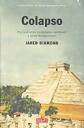

Colapso: Por qué unas sociedades perduran y otras desaparecen (Historias)
Reseña por Jorge I. Zuluaga

Ver reseña en GoodReads (necesita cuenta)
¿Por dónde comenzar a describir mi complicada experiencia con el libro?
Tal vez debería empezar contándoles que fue la segunda vez que leí un libro en compañía (o, más bien, debería decir "simultáneamente").
La lectura conjunta del libro fue la segunda experiencia piloto que emprendí con un buen amigo de lecturas, el nunca bien ponderado Juan Camilo (lean la reseña de Colapso escrita por el mismo Johnson aquí... y, de paso, lean todas sus otras reseñas: ¡son muy originales!).
Creo que Juan Camilo coincidiría conmigo en una cosa: ¡fue una mala elección! Ya habíamos leído "Crisis" del mismo autor y nos había ido bien. Pero no esperábamos que Colapso hiciera colapsar el futuro de nuestro piloto.
Primer problema: el libro es muy largo: 720 páginas en la edición de "Debolsillo" (¡de bolsillo!) y unas 1000 y pico en la edición de Kindle. Pero creímos que ese no sería problema; al fin y al cabo, libros tan o más largos se han escrito sobre la divulgación de la historia y la biogeografía. El problema es que a Colapso le sobran como 350 páginas.
Segundo problema: como lo menciona el mismo Diamond desde el principio (no vimos las señales), el contenido de este libro es parte de su curso en la Universidad de California en Los Ángeles. Mala cosa. El tono del libro es justamente ese: el tono muy académico de las notas de un curso del afamado profesor Jared Diamond. El resultado: un verdadero ladrillo para quienes no matriculamos la materia con Diamond. Imagino que los estudiantes del posgrado en historia de la UCLA disfrutarán del exceso de detalles en el libro, pero los lectores desprevenidos del autor de "Armas, gérmenes y acero" sinceramente nos sentimos traicionados (¿por los editores?).
Tercer problema: el libro comienza con el peor capítulo, "La Montana moderna". Una descripción extremadamente pormenorizada (como para no usar polisílabos más largos) de los problemas ambientales que enfrenta la región de Montana, en los Estados Unidos (¡¿a quién le importa realmente?!), en el tiempo en el que fue escrito el libro (2003). El autor incluso nos "recrea" con algunas transcripciones completas de las declaraciones de los vecinos de Montana (¡aburrido!).
¿Dónde estaban los editores de Diamond cuando el ganador del Pulitzer decidió comenzar su libro con un tema tan poco universal y aburrido? (espanta lectores). Tal vez lo de "Pulitzer" responda mi pregunta.
Les confieso que, si no fuera por Juan Camilo, habría abandonado el libro en la mitad del primer capítulo.
Hasta aquí los problemas.
¿En qué me gasté entonces las 200 banderitas?
Todo hay que decirlo: la idea del libro es ¡genial! (como lo fueron también las ideas de los otros dos libros de esta "saga": Armas, gérmenes y acero y Crisis; en los enlaces, mis reseñas de esos buenos libros).
Odio repetir las descripciones, pero no sobra mencionar que el libro enumera, describe y analiza el surgimiento y la desaparición (o éxito) de una serie de sociedades del pasado y del presente, por la acción de una multitud de factores (que Diamond, como hace en sus otros libros, identifica y analiza).
El libro estudia los casos muy sonados (pero no tan bien conocidos, como termina uno descubriendo después de leer el libro) de la desaparición de la compleja sociedad de la Isla de Pascua, las multitudinarias sociedades mayas o los pueblos anasazi en el suroeste de los Estados Unidos (que, al menos yo, conocí por la serie Cosmos). Pero también analiza otros casos menos conocidos del colapso de sociedades del pasado, como es el caso de otros pueblos en islas del Pacífico polinesio o los vikingos de Groenlandia (mis capítulos preferidos). Finalmente, realiza un análisis de la gestión de los recursos y el inminente colapso (o éxito) de pueblos del presente, desde el fatídico caso de los campesinos ruandeses hasta la Australia minera.
No puedo decir que no aprendí muchísimo leyendo estos capítulos. Si algo bueno tienen los libros de Diamond de biogeografía, es que terminas aprendiendo como un chucho sobre lugares del mundo que en la vida visitarás.
Pero tampoco les puedo decir que disfruté de los cientos de páginas dedicados a cada caso.
Que no se confunda, sin embargo, mi desazón como lector con una falta de justa admiración como científico por el trabajo de documentación de Diamond. ¡Tremendo trabajo! Pero definitivamente no para un libro divulgativo (o no en la forma en la que quedó escrito).
Como siempre, los últimos capítulos, en los que Diamond recoge todas las enseñanzas de su pormenorizado análisis de las sociedades del pasado y del presente, contienen una valiosa colección de lecciones sobre las malas o buenas gestiones que le estamos dando al planeta, que, como dice un proverbio indígena, "no lo heredamos de los abuelos, sino que se lo estamos administrando a nuestros hijos".
Me queda solo una pregunta: ¿los historiadores del futuro nos verán como una copia avanzada de los extraños habitantes de Rapa Nui, que, teniendo el colapso ambiental de su isla frente a las narices, no supieron reaccionar a tiempo, o acaso nos verán como los habitantes de Nueva Guinea, que resolvieron el problema con un enfoque de "abajo hacia arriba" (de la gente a las corporaciones)?
¡"Amanecerá y veremos"! (y es un amanecerá casi inmediato: ¡en 10 o 20 años lo sabremos!).
Si el profesor Diamond se los pide (o si son como niños que tienen que meter el dedo en la llama para probar el fuego), lean Colapso.
En caso contrario, no lo hagan: ¡hay muchos otros buenos textos esperándolos!